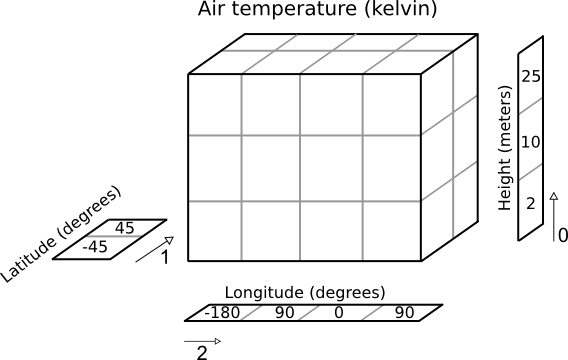

Iris data structures¶
The top level object in Iris is called a cube. A cube contains data and metadata about a phenomenon.
In Iris, a cube is an interpretation of the Climate and Forecast (CF) Metadata Conventions whose purpose is to:
require conforming datasets to contain sufficient metadata that they are self-describing… including physical units if appropriate, and that each value can be located in space (relative to earth-based coordinates) and time.
Whilst the CF conventions are often mentioned alongside NetCDF, Iris implements several major format importers which can take files of specific formats and turn them into Iris cubes. Additionally, a framework is provided which allows users to extend Iris’ import capability to cater for specialist or unimplemented formats.
A single cube describes one and only one phenomenon, always has a name, a unit and an n-dimensional data array to represents the cube’s phenomenon. In order to locate the data spatially, temporally, or in any other higher-dimensional space, a collection of coordinates exist on the cube.
Coordinates¶
A coordinate is a container to store metadata about some dimension(s) of a cube’s data array and therefore, by definition, its phenomenon.
Each coordinate has a name and a unit.
When a coordinate is added to a cube, the data dimensions that it represents are also provided.
The shape of a coordinate is always the same as the shape of the associated data dimension(s) on the cube.
A dimension not explicitly listed signifies that the coordinate is independent of that dimension.
Each dimension of a coordinate must be mapped to a data dimension. The only coordinates with no mapping are scalar coordinates.
Depending on the underlying data that the coordinate is representing, its values may be discrete points or be bounded to represent interval extents (e.g. temperature at point x vs rainfall accumulation between 0000-1200 hours).
Coordinates have an attributes dictionary which can hold arbitrary extra metadata, excluding certain restricted CF names
More complex coordinates may contain a coordinate system which is necessary to fully interpret the values contained within the coordinate.
There are two classes of coordinates:
DimCoord
Numeric
Monotonic
Representative of, at most, a single data dimension (1d)
AuxCoord
May be of any type, including strings
May represent multiple data dimensions (n-dimensional)
Cube¶
A cube consists of:
a standard name and/or a long name and an appropriate unit
a data array who’s values are representative of the phenomenon
a collection of coordinates and associated data dimensions on the cube’s data array, which are split into two separate lists:
dimension coordinates - DimCoords which uniquely map to exactly one data dimension, ordered by dimension.
auxiliary coordinates - DimCoords or AuxCoords which map to as many data dimensions as the coordinate has dimensions.
an attributes dictionary which, other than some protected CF names, can hold arbitrary extra metadata.
a list of cell methods to represent operations which have already been applied to the data (e.g. “mean over time”)
a list of coordinate “factories” used for deriving coordinates from the values of other coordinates in the cube
Cubes in practice¶
A simple cube example¶
Suppose we have some gridded data which has 24 air temperature readings (in Kelvin) which is located at 4 different longitudes, 2 different latitudes and 3 different heights. Our data array can be represented pictorially:

Where dimensions 0, 1, and 2 have lengths 3, 2 and 4 respectively.
The Iris cube to represent this data would consist of:
a standard name of
air_temperatureand a unit ofkelvina data array of shape
(3, 2, 4)a coordinate, mapping to dimension 0, consisting of:
a standard name of
heightand unit ofmetersan array of length 3 representing the 3
heightpointsa coordinate, mapping to dimension 1, consisting of:
a standard name of
latitudeand unit ofdegreesan array of length 2 representing the 2 latitude points
a coordinate system such that the
latitudepoints could be fully located on the globea coordinate, mapping to dimension 2, consisting of:
a standard name of
longitudeand unit ofdegreesan array of length 4 representing the 4 longitude points
a coordinate system such that the
longitudepoints could be fully located on the globe
Pictorially the cube has taken on more information than a simple array:
Additionally further information may be optionally attached to the cube. For example, it is possible to attach any of the following:
a coordinate, not mapping to any data dimensions, consisting of:
a standard name of
timeand unit ofdays since 2000-01-01 00:00a data array of length 1 representing the time that the data array is valid for
an auxiliary coordinate, mapping to dimensions 1 and 2, consisting of:
a long name of
place nameand no unita 2d string array of shape
(2, 4)with the names of the 8 places that the lat/lons correspond toan auxiliary coordinate “factory”, which can derive its own mapping, consisting of:
a standard name of
heightand a unit offeetknowledge of how data values for this coordinate can be calculated given the
height in meterscoordinatea cell method of “mean” over “ensemble” to indicate that the data has been meaned over a collection of “ensembles” (i.e. multiple model runs).
Printing a cube¶
Every Iris cube can be printed to screen as you will see later in the user guide. It is worth familiarising yourself with the output as this is the quickest way of inspecting the contents of a cube. Here is the result of printing a real life cube:
air_potential_temperature / (K) (time: 3; model_level_number: 7; grid_latitude: 204; grid_longitude: 187)
Dimension coordinates:
time x - - -
model_level_number - x - -
grid_latitude - - x -
grid_longitude - - - x
Auxiliary coordinates:
forecast_period x - - -
level_height - x - -
sigma - x - -
surface_altitude - - x x
Derived coordinates:
altitude - x x x
Scalar coordinates:
forecast_reference_time: 2009-11-19 04:00:00
Attributes:
STASH: m01s00i004
source: Data from Met Office Unified Model
um_version: 7.3
Using this output we can deduce that:
The cube represents air potential temperature.
There are 4 data dimensions, and the data has a shape of
(3, 7, 204, 187)The 4 data dimensions are mapped to the
time,model_level_number,grid_latitude,grid_longitudecoordinates respectivelyThere are three 1d auxiliary coordinates and one 2d auxiliary (
surface_altitude)There is a single
altitudederived coordinate, which spans 3 data dimensionsThere are 7 distinct values in the “model_level_number” coordinate. Similar inferences can be made for the other dimension coordinates.
There are 7, not necessarily distinct, values in the
level_heightcoordinate.There is a single
forecast_reference_timescalar coordinate representing the entire cube.The cube has one further attribute relating to the phenomenon. In this case the originating file format, PP, encodes information in a STASH code which in some cases can be useful for identifying advanced experiment information relating to the phenomenon.